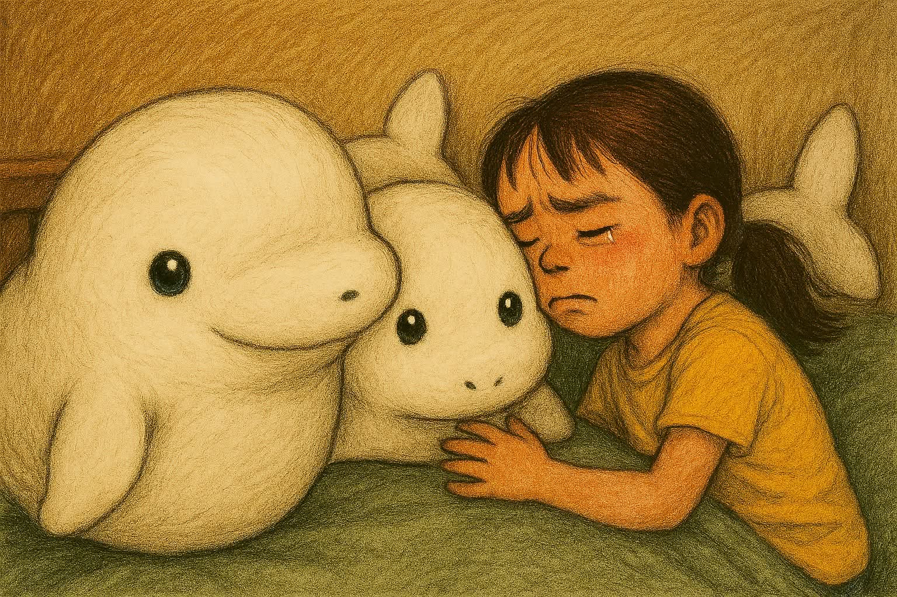
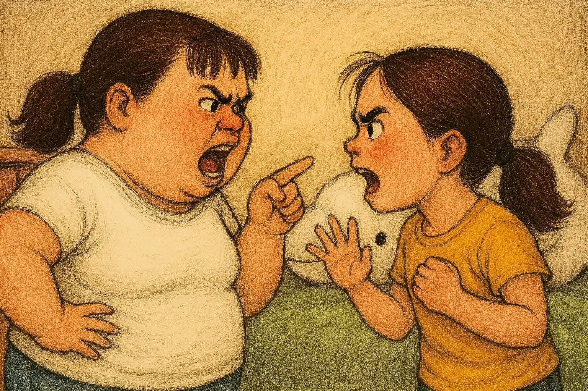

ベルーガ大作戦の遊び方と、このサイトについて
「ベルーガ大作戦」は、ぬいぐるみを取り上げられてしまった子どもが、ママの目をぬすんで、ぬいぐるみを自分の部屋に取り返す、ブラウザで遊べる無料のミニゲームです。インストールや登録は要りません。スマートフォン、タブレット、パソコンで遊べます。
ストーリー
いつも姉妹ゲンカをして、ぬいぐるみになぐさめてもらっていた子ども。今日もケンカをしていたら、ママに、全部のぬいぐるみを取られてしまいました。さあ、大変！ ママの目をぬすんで、ぬいぐるみを取り返そう！


ゲームの目的
制限時間の60秒（ゲームの中では、夜の20時から、朝の8時まで）のあいだに、ベッドのそばにあるベルーガのぬいぐるみを、できるだけ多く、右にある「自分の部屋」へ運びます。運んだぬいぐるみの大きさに応じてポイントが入り、合計ポイントを競います。
基本の遊び方
- ベルーガをタップすると、泥棒のかっこうをした子どもが、ぬいぐるみを引きずって、そろりそろりと自分の部屋に向かいます。運んでいる途中でもう一度タップすると、止まれます。
- ママの様子をよく見るのがポイントです。ママは次の4つの状態をくり返します。
- 「すぅ…💤」：ぐっすり寝ています。運ぶチャンスです。
- 「ん…？」：目が覚めそうです。すぐに止まる準備をしましょう。
- 「じーっ👀」：ママが見ています。運んでいると見つかります。
- 「こらっ！」：見つかった時の状態です。
- 見つかると、集めたぬいぐるみが全部取り上げられ、点数が0に戻ります。ドキドキしながら、慎重に運びましょう。
- ぬいぐるみを部屋に運び込むと、子どもが「にやっ」とします。部屋には、大きい順に、下から積み上がっていきます。
ぬいぐるみの大きさとポイント
| 大きさ | ポイント | 運ぶのにかかる時間 | 特徴 |
|---|---|---|---|
| 小 | 1点 | 約0.8秒 | すばやく運べる。見つかりにくい。 |
| 中 | 3点 | 約1.8秒 | ほどよい点数とリスク。 |
| 大 | 5点 | 約3.0秒 | 高得点だが、運ぶあいだにママが見る可能性が高い。 |
2つのモード
🍺 かんたんモード：パパが助けてくれる
画面の下にある3つのボタンで、パパがママを呼んでくれます。ママはパパのほうを見るので、そのあいだは運んでも見つかりません。ただし、使ったあとは、しばらく使えなくなります。
| ボタン | 気をそらせる時間 | 次に使えるまで |
|---|---|---|
| 🍺 ビールだよ | 1.5秒 | 7秒 |
| 📺 VIVANT始まるよ | 2.5秒 | 12秒 |
| 🧘 ヨガの時間だよ | 3.5秒 | 20秒 |
パパは、運ぶ方向とは反対の左側から、ママを呼びます。パソコンでは、キーボードの 1・2・3 のキーでも使えます。
🔥 難しいモード：パパの助けなし
パパの呼びかけは使えません。ママの様子だけを見て、寝ている合間に運び、目が覚めそうになったらすぐに止まる判断力が試されます。
高得点のコツ
- ゲームの最初は、ママがぐっすり寝ています。まずは、大きいぬいぐるみに取りかかるのがおすすめです。
- 「ん…？」という表示が出たら、その次に「じーっ」が来ます。表示を見たら、すぐタップして止まりましょう。
- 時間がたつほど、ママは起きやすくなります。後半は、小さいぬいぐるみで、確実に点数をかせぐのも作戦です。
- かんたんモードでは、大きいぬいぐるみを運びはじめる直前に、いちばん長く気をそらせる「ヨガの時間だよ」を使うと成功しやすくなります。
- 集めた点数は、見つかると全部なくなります。残り時間が少ない時ほど、欲ばらないことが大切です。
ランキング
高い点数を取ると、名前（あだ名）を入力して、ランキングに登録できます。ランキングは、かんたん・難しいで別々に、10位まで記録されます。名前や点数は、お使いのブラウザの中にだけ保存され、インターネット上のサーバーには送られません。そのため、ほかの人のランキングは見えません。名前には、本名や住所などは入れず、あだ名を使ってください。
よくある質問
お金はかかりますか？
いいえ、無料で遊べます。ただし、サイト運営のために広告が表示される場合があります。くわしくはプライバシーポリシーをご覧ください。
どんな機器で遊べますか？
最新のブラウザ（Chrome、Safari、Edgeなど）が使える、スマートフォン、タブレット、パソコンで遊べます。スマートフォンは、横向きにすると、画面が大きく見えて遊びやすくなります。
音が出ますか？
簡単な効果音が出ます。画面の右上のスピーカーのボタンで、オン・オフを切り替えられます。
ランキングが消えてしまいました。
ランキングは、お使いのブラウザに保存されています。ブラウザの閲覧データ（サイトデータ）を削除したり、シークレットモードで遊んだりすると、消えたり、保存されなかったりします。
ゲームが動かない、画面が崩れます。
ブラウザを最新版にして、ページを再読み込みしてみてください。それでも直らない場合は、下の連絡先までお知らせください。
保護者の方へ
このゲームは、小学生のお子さまが遊ぶことを想定して作っています。暴力的な表現や、課金要素はありません。名前などの個人情報は、サーバーには送りません。広告の取り扱いについては、プライバシーポリシーに記載しています。
このサイトについて
| サイト名 | ベルーガ大作戦 |
|---|---|
| 内容 | ブラウザで遊べる、無料のミニゲーム |
| 連絡先 | お問い合わせフォーム |